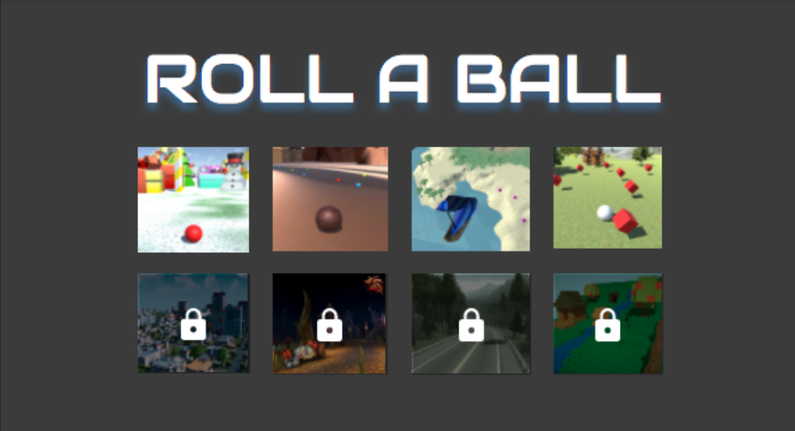

'Roll-a-ball' is a game in which the player is identified as a ball and its main goal is to compete against other players to get the maximum amount of points by collecting objects. The objects are variable, can be cubes, spheres, gifts or any other 3D floating object to collect. There will be good objects which will increase your number of points and bad objects which will decrease your score. The game has a multiplayer interface with two to six players in each game. The game will also have several scenes to play, each one characterized by a theme. It will end once all the objects of the scene are collected or when the timer finishes. This game was developed with Unity and Java.

Client and Server architecture
Clients will send a username and password to the server, which the server will authenticate by comparing to the data in the database. Once authenticated, users will receive a random unique ID that will be used to keep track of their session. When sending their coordinates, they will send their location and direction every 0.5 seconds. This may be able to be implemented into the “heartbeat” request so that if the server doesn’t receive coordinates for 10 seconds, then the client’s unique ID is released from any current games.
The database keeps track of user data and the games that currently exist, but the actual game data like player coordinates, timer, etc., is stored in the RAM on the server. A new game can be a new thread. The server and the client will have their own protocol format instead of the standard HTTP. Requests will be sent using TCP.
UI of the game
There are 8 different scenes for the user to play - a forest, an island with a beach, a city, winterland, candy world, lego world, racing-collect and Halloween. Each scene will have its own characteristics, for instance the pickupable objects and music, which will be changing according to the theme of the landscape. Some of these scenes will be locked at the beginning of the game, but when the user gains more experience and increase their level, the scenes will be unlocking.
Audio of the game
Sound effects are going to help the player both immerse themself in the level and alert the player to the state of the level. The levels and ball are going to be made out of a variety of different materials. Our goal is to imitate the surfaces that the ball rolls on, the actions the ball takes, and the surfaces that the ball collides with. Sound effects are also going to be attributed to the various collectables in addition to milestone scores that occur as a result of playing through the level.
Music is going to enhance the thematic elements of the level and lobby. Because each level/scene is going to have a unique artistic direction, the music is going to have to be composed in such as fashion. The lobby, however, is going to provide the option to play a selection of different musical styles and, perhaps, music that plays in the levels.
'Candy World' background music
'Island' background music
'Halloween' background music
'Good pickupable' example sound
The Team
Worked in collaboration with other Computer Science students at SFSU: Ekta Tandel, James Quintero, Matthew Berkman, Cheng-Feng Huang and Pohung Wang. Music students at SFSU: Forrest, Omar and Stephen.
Github repository: https://github.com/leirelitw/unity631